사진은 거리를 지웁니다
벽과 바닥, 가구 사이에 흩어진 혈흔의 위치와 거리는 사진 몇 장으로는 온전히 전해지지 않습니다.
Apple Vision Pro를 위한 혈흔 형태 분석 훈련
BPA 360은 실제 크기로 재현한 사건 현장을 걸으며 혈흔을 관찰하고, 묶고, 재고, 추론하는 혈흔 형태 분석(BPA)의 전 과정을 연습하는 visionOS 앱입니다.
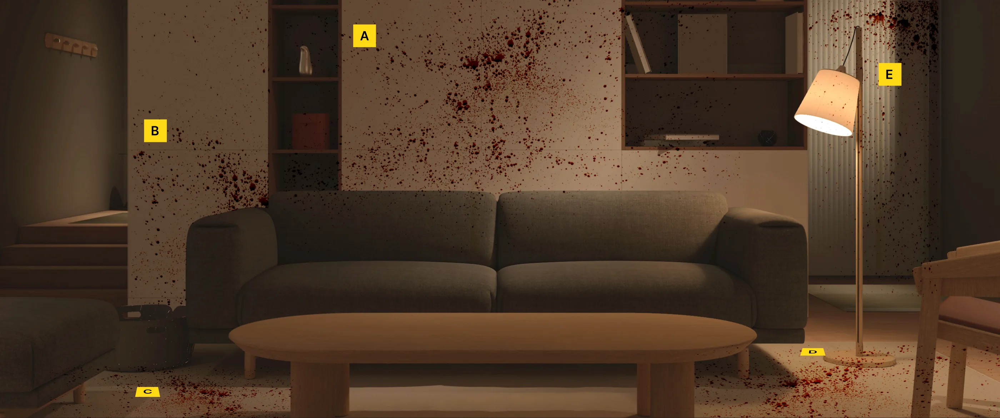
왜 공간이어야 할까요
벽과 바닥, 가구 사이에 흩어진 혈흔의 위치와 거리는 사진 몇 장으로는 온전히 전해지지 않습니다.
실제 현장은 오래 보존되지 않아, 같은 장면을 처음부터 다시 분석해 볼 기회가 드뭅니다.
장축과 단축을 재고 줄을 이어 발혈부위를 찾는 일은 직접 해 봐야 감각이 생깁니다.
그래서 BPA 360은 현장을 통째로 눈앞에 펼쳐 놓습니다. 걸어 들어가고, 손을 뻗어 재고, 몇 번이고 다시 시작할 수 있게.
02현장 관찰
거실 한 칸이 실제 크기로 펼쳐집니다. 노란 증거 표지가 분석할 구역을 알려주고, 단계별 안내가 어디부터 볼지 짚어 줍니다.
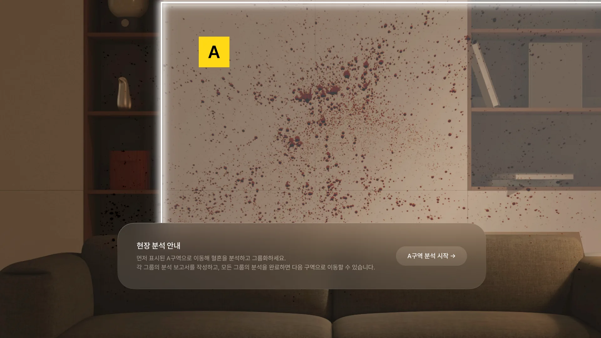
03클러스터링 · 형태 분류
방향 스티커를 혈흔 위에 직접 붙여 방향을 남기고, 핀치로 영역을 끌어 비슷한 혈흔을 하나의 그룹으로 묶습니다. 묶은 그룹은 분류 기준에 따라 유형을 판단합니다.
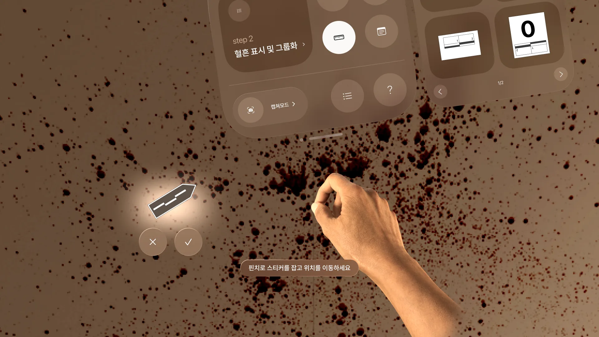
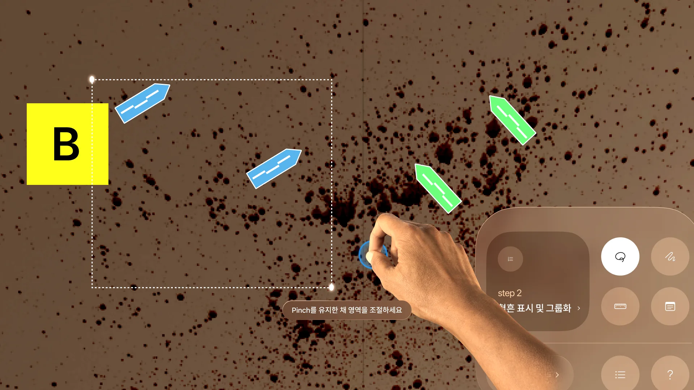
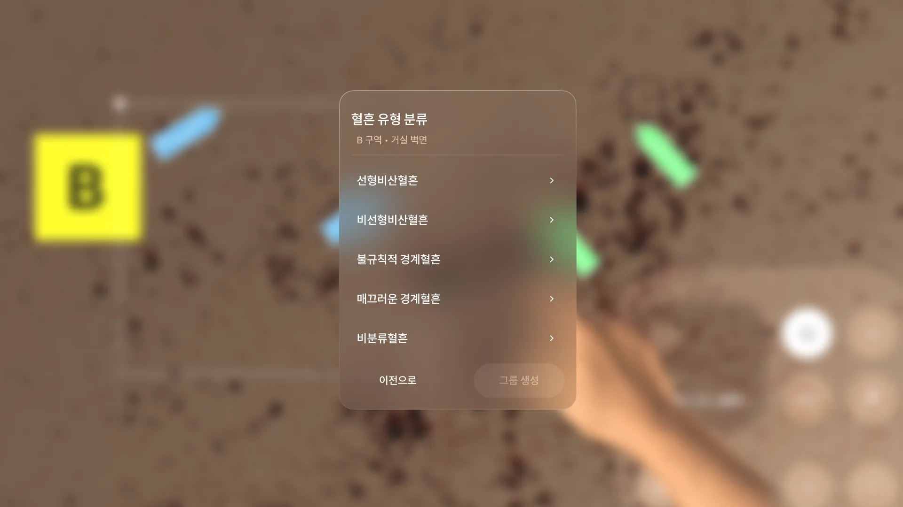
04방향성 · 움직임 판단
대표 혈흔의 장축과 단축을 손으로 재면 충돌각이 나옵니다. 줄 연결법으로 혈흔마다 선을 이으면 평면집중부위가, 각도를 더하면 공간발혈부위가 드러납니다.
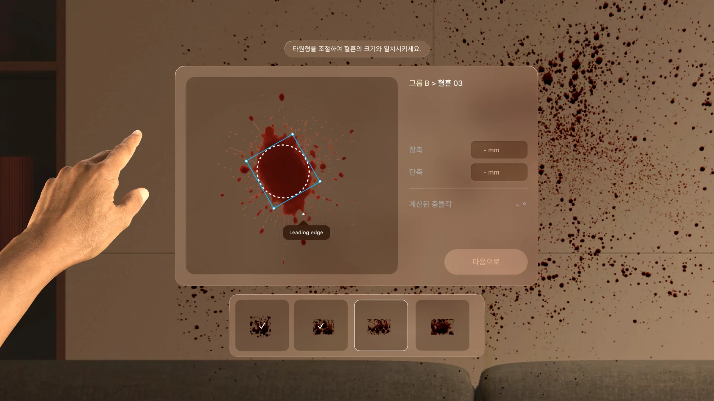
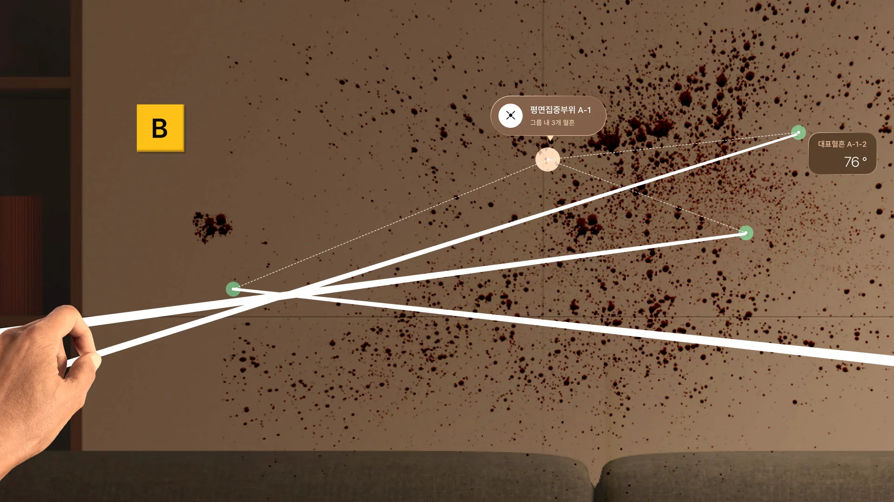
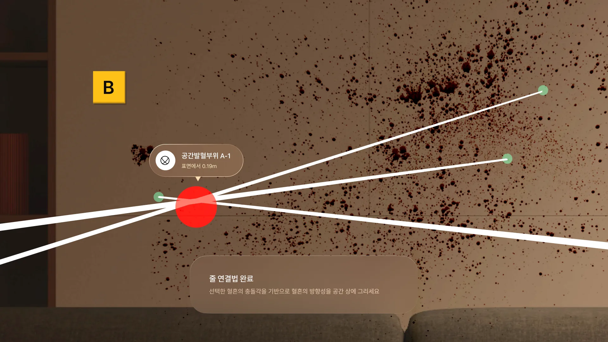
05행위 가설
관찰하고 측정한 혈흔을 근거로 현장에서 어떤 움직임이 있었는지 가설을 세웁니다.
06예시 답안 비교
세운 가설을 예시 답안과 비교하며 놓친 근거와 다르게 본 지점을 확인합니다.
분석을 돕는 도구
패널 하나에 단계 이동, 측정 도구, 메모와 캡처를 모았습니다. 현장에서 눈을 떼지 않고 다음 일로 넘어갑니다.
지금 단계와 다음 단계, 측정 · 메모 · 캡처 도구를 한 패널에서. 손가락을 모으는 핀치 한 번이면 됩니다.
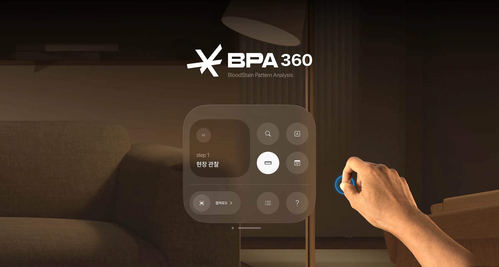
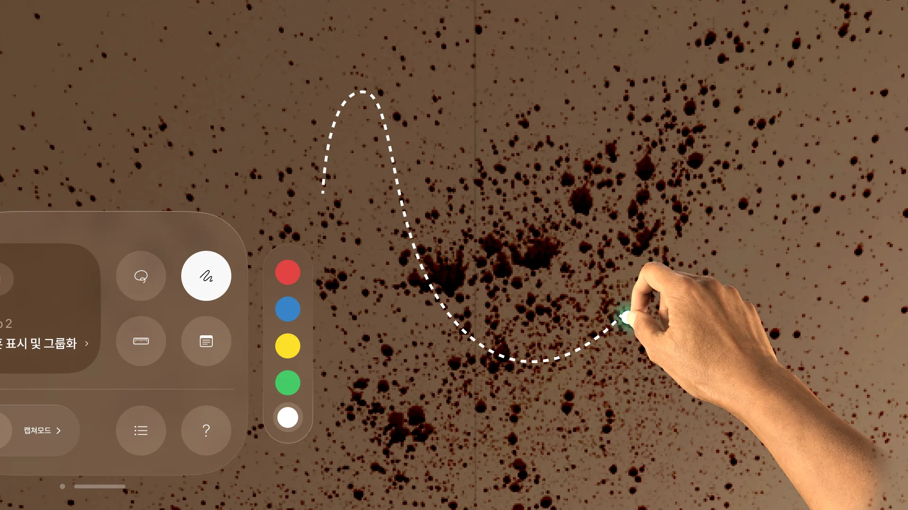
공간에 직접 선을 그어 혈흔이 흐른 방향을 표시합니다.
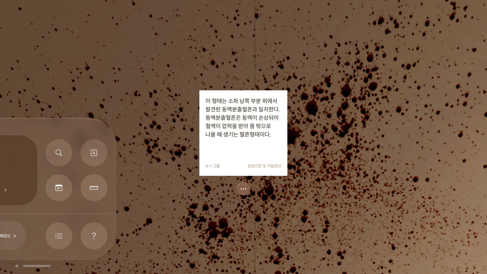
떠오른 생각을 메모지에 적어 현장 벽에 그대로 붙여 둡니다.
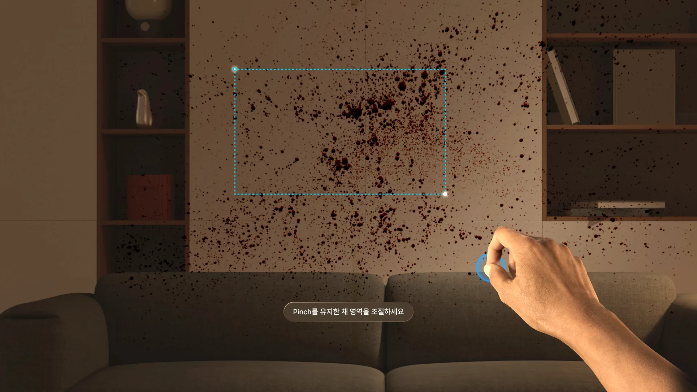
보고 있는 장면을 영역째 잡아 사진으로 남깁니다.